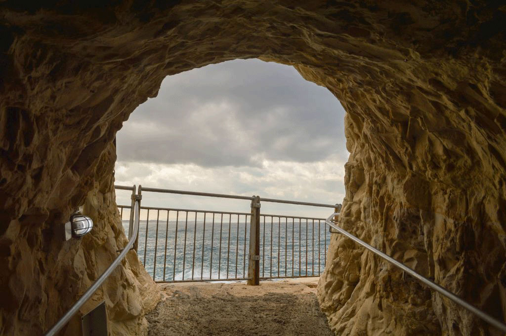

Some Random Information.
-
Wadi Mujib is lesser known than Wadi Rum, but is spectacular in its own way. Located in the lower part of the Wadi Mujib River, the slot canyon is impressive in its own way. The river becomes so tight that it’s only a few meters wide.
-

Now, you can explore the grottoes by taking a pathway through the twists and turns admiring the formations while listening and watching the sea crash through the passageways.
-

The Siwa oasis is one of the most amazing natural wonders in Egypt. After driving through hundreds of kilometers of dry desert, you would never expect to find such clear, turquoise pools, which look like they are out of a movie.
-
The Baatara waterfall, also called “the Cave of the Three Bridges” is one of the most famous natural wonders of Lebanon. Geologists say that the waterfall has existed for over 160 million years.
Call to action! it's time!
Sign up for our product by clicking that button right over there!